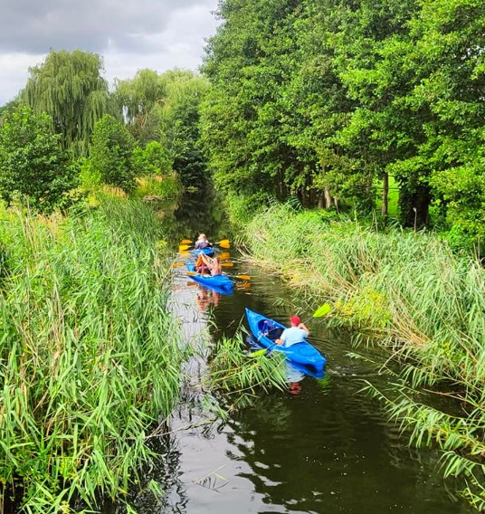

RobFil - Robert Filipiak
spływy kajakowe
spływy galerą
imprezy okolicznościowe
rusztowania
kontakt
Spływy kajakowe:
Oferujemy państwu spływy kajakowe po malowniczych rzekach w gminie Oborniki i okolicach. Z łatwością dopasowujemy się do wymagań klienta, to państwo wybieracie miejsce startu, i metę. Szczególnie jednak polecamy spływy Jaracz-Kowanówko/Oborniki, trasa jest jedną z najczęściej wybieranych i posiada miłośników zarówno wśród osób spływających po raz pierwszy jak i regularnych kajakarzy. Z innych ciekawych tran należy także wymienić Oborniki-Stobnica, oraz Kiszewo-Oborniki. Po niezapomnianym spływie zapraszamy na ognisko, lub rejs galarą.
W cenie spływu oferujemy: kajaki, wymagany sprzęt (wiosła oraz kapoki) a także transport.
